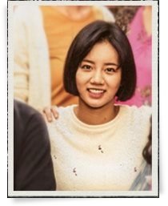
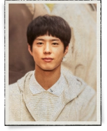
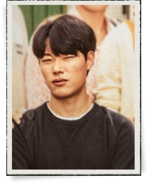
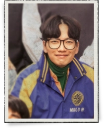
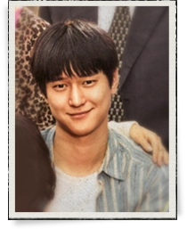

收藏
2200
点赞
1901
转发
1709
《请回答1988》是由申源浩执导，李有静编剧，李惠利、朴宝剑、柳俊烈、高庚杓等主演的青春怀旧剧，2015年11月6日起在韩国tvN电视台金土档播出。
该剧是“请回答”系列的第3部电视剧，以1988年汉城（今首尔）奥运会为背景，讲述在首尔市道峰区双门洞居住的五户人家之间温暖的亲情和邻里情的故事。

基本信息
中文名
请回答1988
别名
应答吧1988、回应吧1988、Reply 1988
主演
李惠利、朴宝剑、柳俊烈、高庚杓、李东辉、刘慧英
制片地区
韩国
每集时长
90分钟
拍摄地点
韩国
导演
申源浩
编剧
李有静
演员介绍
-

成德善演员 李惠利
双门洞五人帮之一，18岁，双门女高二年级学生，外号“双门洞特功袋”（功课特别差的脑袋），是个愉快又活泼的少女。她在家中排行第二，总是受到姐姐的压制、弟弟的纠缠。她的学习成绩一直倒数，不过她本人对成绩也是毫不在意。比起课本，更在意十七八岁的浪漫；比起成绩，更在意自己的外貌。
-

崔泽演员 朴宝剑
双门洞五人帮之一，18岁，钟表店“凤凰堂”家的独子。他是韩国国宝级围棋大师，在围棋界享有“石佛”称号。他11岁进入职业棋坛，13岁成为最年轻的世界围棋冠军。不知从何时开始，他的心里就像荒地吹进了一丝暖风，只要想到她心情就会很好，只要看见她就会不由自主地微笑，第一次想走出棋盘，走进那个女孩的世界。
-

金正焕演员 柳俊烈
双门洞五人帮之一，金成钧的二儿子，18岁，外号“双门洞狗正八”。他表面上很刻薄，对什么都不满，但内心里却默默为所有人考虑。他成绩非常好，足球也踢得好，在学校周围的女生中很受欢迎。但因为他像狗一样的性格，所以他的女性朋友就只有认识18年的德善。他每天欺负她，但是奇怪的是，没有她会空虚，看不见她会好奇。
-

刘东龙演员 李东辉
双门洞五人帮之一，18岁，双门高中学生主任刘在明的儿子。他总是嘴里叼著牙签，而且喜欢跳舞，所以外号“双门洞朴南正”。他学习成绩很差，但是对于各类舞蹈却是过目不忘。除此之外，他对于女高中生们经常去的地方、能租到黄色录像带的地方、上映三级片的电影院等也都了如指掌，是朋友们眼中的高级情报员。
-

成善宇演员 高庚杓
双门洞五人帮之一，18岁，双门高中二年级学生，外号“双门洞妈朋儿”（妈妈口中的“朋友的儿子”，也就是传说中的完美男）。他与德善的生日是同一天。他是双门高中学生会会长，学习成绩出众，还有着在同龄的男孩子中绝对找不到的亲切又温和的性格。他在朋友之间、老师之间都是个很有人气的绅士。